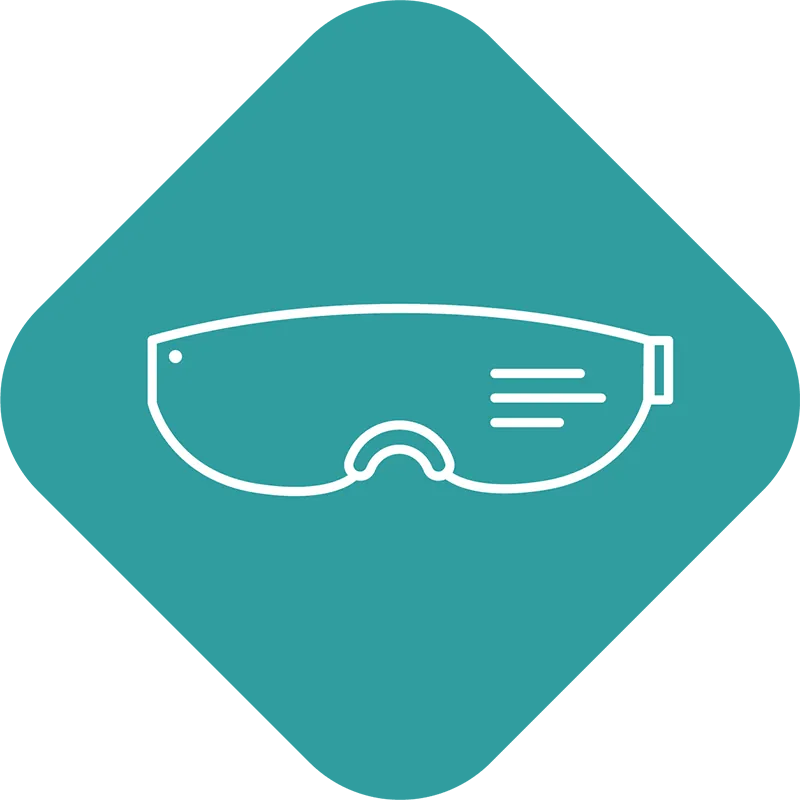

Forside / Teknologi
Teknologi
TLens® endrar fokus ved hjelp av piezo og polymer — utan motor og utan bevegelege delar.
Slik verkar det
Ei tynn polymerlinse blir forma av piezoaktuaror, slik at fokus endrar seg momentant.
PrinsippTLens® vs VCM
Voice coil-motorer må flytte ei linse fysisk. TLens gjer det utan mekanikk.
SamanlikningDrivkrets
TLens Driver ASIC gir presis styring av linsa.
ASICReferansedesign
TLens Add-In gjer det enklare å integrere teknologien i kameramodular.
DesignEvalueringskit
For test og validering i eige oppsett.
KitPatent
Teknologien er patentert og vidareutvikla.
IP
Fokus i tid og rom
TLens® gir umiddelbar fokus — opptil ti ganger raskare enn konkurrerande teknologi. Det gjer han eigna i einingar der det er lite plass og der fokus må skje no.
- Ingen bevegelege delar
- Rask fokus
- Kompakt formfaktor
Om teknologien
Kva er TLens?
Ei tunbar linse som endrar fokus med piezo og polymer, utan motor.
Kor rask er fokusen?
Opptil ti gongar raskare enn konkurrerande teknologi, ifølgje poLight.
Kan vi teste teknologien?
Ja, det finst evalueringskit og referansedesign — ta kontakt.
Trenger dere meir detaljar?
Ta kontakt, så går vi gjennom det tekniske.